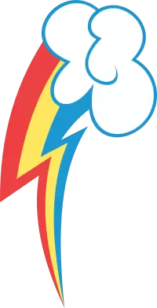
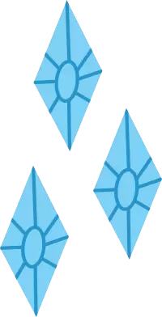
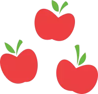

$MARE: An Ethereum token for the oppressed bronies, horsefuckers, and nor/mlp/eople. These bits are bringing mares to the world of blockchain. It may be a meme token, but with your support we can show the furry tokens that hoofs always beat paws.
/)
tl;dr
Token Symbol
$MARE
Max Supply
233,666,428,911.958452213243697852
Presale Starts
Soon, I hope
Contract Address
0xc5a1973e1f736e2ad991573f3649f4f4a44c3028
Details
Supply
Supply itself is limited to approximately 233,666,428,911 tokens. No new tokens will ever be minted, and the contract itself does not support minting. This means there is a limited supply, making these some hot Mare Bits.
Liquidity

These Mare Bits are also moister than an oyster! Our goal is to squirt 90% of tokens into presale and liquidity provider contracts with various exchanges; the resulting LP tokens will be locked for at least
Developer Tokens
Only about 10% of tokens will initially be held by the dev, and if we can find a suitable vesting platform they will only be released on a certain schedule, helping to guarantee the developer won't pull out early (no mare likes that, details TBD)
Reducing Arbitrage Risks

In order to mitigate the risks of impermanent loss due to arbitrage, at least 50% of the tokens set aside for liquidity will immediately be issued to a single exchange (likely Uniswap) with the remaining kept aside with periodic releases to allow for the addition of more liquidity providers (this is another situation where they will be locked away if a solution can be found, details TBD)
Airdrops
We may donate some of the 10% of dev tokens held back for airdrops/giveaways in order to help promote Mare Bits. We want everyone talking about these juicy bits, so we'll be trying hard to come up with some way to reward shills
Blockchain Portability

Polygon has provided a PoS bridge between Mare Bits on Ethereum and the Matic blockchain; this means you can easily move your Mare Bits to and from Matic to take advantage of lower transaction fees. We will be looking to provide liquidity on Matic as well. See the contract on Polygonscan
Join Us
If you also believe in mares and want to make this project a success, please reach out and lend a hoof.
Pre-Sale
Test contract is not yet deployed, this area is mostly useless until then
In Testing: The pre-sale is currently running on the Ropsten Test Network. If you don't know what you're doing, don't do anything.
Presale contract address:
Token contract address:
Please read this carefully before proceeding
By participating in this presale, you agree to the following terms
1 MARE will cost 0.0000000000165 ETH; or for each 1 ETH you will receive 60,753,271,517 MARE
The pre-sale has a set start time and a set end time; no sales will be allowed outside of this period
The pre-sale is limited to 2 ETH (121,506,543,034 MARE); no sales will be allowed once this limit is reached and no sale will be allowed that would exceed this limit, but the sale will not be considered ended until the end time has passed
The pre-sale smart contract owner is able to finalize the sale early; if this happens, then no further sales will be allowed, but the sale will not be considered ended until the end time has passed
Once the pre-sale has ended (but not necessarily finalized), you will be able to withdraw your purchased MARE; this will only happen after the end time has passed
Once the pre-sale is ended, the smart contract owner will finalize it. Doing so will:
Return all unsold MARE to the pre-sale smart contract owner
Transfer all ETH raised to the pre-sale smart contract owner
This finalization step is not necessary for your purchased MARE to be withdrawn
The sole purpose of this pre-sale is to allow the community to provide the liquidity needed for long-term exchange smart contracts. To accomplish this:
All ETH raised and all unsold MARE will be combined into liquidity smart contracts on select Ethereum and Matic decentralized exchanges, in an as yet to be determined split (open to input on this, probably a mix of 1inch, Uniswap, SushiSwap, QuickSwap, and/or any others suggested)
The liquidity smart contracts will be configured so that the initial rate for 1 MARE on the exchanges will be valued at approximately 0.0000000000214 ETH; or 1 ETH for 46,733,285,782 MARE (meaning you get approximately 30% more MARE per ETH during the pre-sale)
Each of these liquidity contracts will be locked for at least 5 years
If necessary in order to maintain the desired rate, we will either provide ETH funding directly from a private account or we will burn any excess MARE. If a burn is done, it will be posted here publicly (this could happen if there is too much MARE to list on the exchanges and not enough ETH)
In the event of an excess of ETH raised by the pre-sale (very unlikely if my math is right), it will be sold off and the proceeds donated to a horse-related charity with which we are unaffiliated (this could happen if there is too much ETH for the remaining MARE to be listed on the exchanges)
In other words, we will be taking 0 profit at the end of this pre-sale
MARE is not an investment vehicle, there is nothing backing MARE, it is an extremely risky meme coin and its value could fall at any time
There are no guarantees that the price of your MARE will increase or decrease
The above being understood, we do personally vow to abide by these terms as closely as possible and will provide evidence on the site of all contracts and transactions relating to liquidity, burns, donations, and locking of assets. Please contact us at one of the links above and ask if you think there is some documentation we are missing
Please note, since exchanges are volatile, there is no guarantee your MARE will retain its value
MARE is not an investment vehicle, there is no company backing MARE
As a meme token, MARE is extremely risky and there is no guarantee it will hold value, so please don't invest any money in MARE that you aren't willing to lose
While we have made every effort to ensure the smart contract is safe, we will not be held liable in the case a flaw which we were not aware of occurs. If possible, we will do what is necessary to make it right, but there is never a guarantee
Please know what you are doing before you participate in this pre-sale; it is not for newbies!
You will have to perform two transactions to purchase MARE under this pre-sale: One for the purchase and one for the withdraw after the pre-sale has ended. Each of these transactions will carry with it a network fee, and you are solely responsible for paying these fees. These fees go to the Ethereum network and are not retained by us
If you are at all unsure, please don't participate, and instead wait for the exchange listings, or ask a friend who is more knowledgeable to help you out; or, if you know who we are, come to us directly and we will lend a hoof
In order for this presale to work, you must enable JavaScript and it is highly recommended you use a MetaMask wallet on an up-to-date version of either a Chromium (including Google Chrome) or Firefox browser
So far, MARE have been sold representing ETH of the pre-sale cap of 2 ETH.
Sorry, the pre-sale is not yet open.
You will receive MARE.
You currently have MARE pre-ordered. Once the pre-sale is over, you will be able to withdraw them by using the button above.